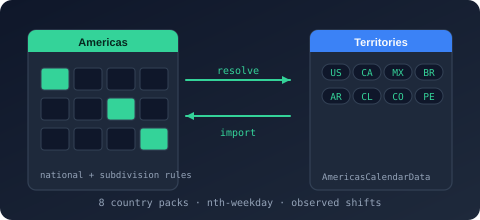

Bodu.Globalization.Calendar data packs

The Bodu.Globalization.Calendar.<Region> packages are the curated holiday data for the calendar runtime: five independent NuGet packages - Americas, AsiaPacific, Europe, MiddleEast, and Africa - each embedding one self-contained rule document per country (national rules plus the subdivisions the pack authors, such as AU-NSW, CA-ON, DE-BY, GB-SCT, US-CA) and exposing a single <Region>CalendarData factory. They are part of the Globalization & Calendars topic and ship on their own cadence, so a rule correction never forces a runtime rebuild.
Install only the regions you need. The runtime Bodu.Globalization.Calendar is required by every pack; nothing else is.
The pack surface
Every <Region>CalendarData type is static, lives in the Bodu.Globalization.Calendar namespace (not a .Data sub-namespace, so one using covers the runtime and the packs), and exposes exactly three members:
| Member | Purpose |
|---|---|
static IReadOnlyList<string> SupportedCountries { get; } |
The ISO 3166-1 alpha-2 country codes the pack carries. Subdivisions are not enumerated. |
static NotableDateResource LoadResource(string territory) |
Loads the immutable, validated NotableDateResource for the country owning territory - a country code or one of its subdivisions ("US", "CA-ON", "AU-WA"). Throws ArgumentException when the country is not in the pack. Imports are resolved automatically. |
static NotableDateService CreateService(string territory) |
new NotableDateService(LoadResource(territory)) - a ready-to-query NotableDateService. |
A subdivision argument selects its country's resource; the full territory string is then honored when you query, so CreateService("AU-WA") followed by Resolve(2026, "AU-WA") returns the national AU rules plus the Western Australia rules. The five factories are AmericasCalendarData, AsiaPacificCalendarData, EuropeCalendarData, MiddleEastCalendarData, and AfricaCalendarData.
Territory coverage
Each pack embeds one region-<cc>.xml document per country under its Resources folder.
| Package | Countries |
|---|---|
Bodu.Globalization.Calendar.Americas |
AR Argentina · BR Brazil · CA Canada · CL Chile · CO Colombia · MX Mexico · PE Peru · US United States |
Bodu.Globalization.Calendar.AsiaPacific |
AU Australia · CN China · HK Hong Kong · ID Indonesia · IN India · JP Japan · KR South Korea · MY Malaysia · NZ New Zealand · PH Philippines · SG Singapore · TH Thailand · TW Taiwan · VN Vietnam |
Bodu.Globalization.Calendar.Europe |
AT Austria · BE Belgium · BG Bulgaria · CY Cyprus · CZ Czechia · DE Germany · DK Denmark · EE Estonia · ES Spain · FI Finland · FR France · GB United Kingdom · GR Greece · HR Croatia · HU Hungary · IE Ireland · IT Italy · LT Lithuania · LU Luxembourg · LV Latvia · MT Malta · NL Netherlands · PL Poland · PT Portugal · RO Romania · SE Sweden · SI Slovenia · SK Slovakia |
Bodu.Globalization.Calendar.MiddleEast |
AE United Arab Emirates · IL Israel · JO Jordan · QA Qatar · SA Saudi Arabia · TR Türkiye |
Bodu.Globalization.Calendar.Africa |
EG Egypt · ET Ethiopia · GH Ghana · KE Kenya · MA Morocco · NG Nigeria · ZA South Africa |
Where a country has subdivision-specific holidays the pack authors them under ISO 3166-2 codes - the Australian states and territories, the Canadian provinces, the German Länder, the US states, the UK nations (GB-ENG, GB-SCT, GB-WLS, GB-NIR), the Alsace-Moselle départements (FR-57, FR-67, FR-68), and the Brazilian and Mexican states with authored rules. The per-pack reference and the notable-date catalogue list what each territory actually observes.
Region hubs and the common catalogues
Concepts are authored once in the runtime's bundled common catalogues - global-core, christian-western, christian-orthodox, catholic, global-islamic / global-islamic-umm-al-qura, global-jewish, global-buddhist, global-hindu, global-persian, and the rest - and a country document imports the concepts it observes, supplying its own territory scope, non-working status, and adjustment policies through <Use> directives. The runtime's CommonNotableDateResources resolves those names: Resolve(string) returns a catalogue's XML, Resolve(CommonNotableDateCatalog) / Load(CommonNotableDateCatalog) address one by the CommonNotableDateCatalog enum (GlobalCore, ChristianWestern, GlobalIslamic, …), and Resolver is the Func<string, string?> a loader takes.
Four packs also ship a region hub - americas-common, europe-common, middleeast-common, africa-common - an embedded document that re-exports the shared concepts the region's countries have in common (and occasionally defines a few of its own), so region-us.xml imports americas-common rather than each catalogue directly. The pack's LoadResource serves the hub from its own embedded resources and falls back to CommonNotableDateResources.Resolve for everything else; the AsiaPacific documents import the common catalogues directly. You never wire a resolver by hand for a pack territory.
Install
# The runtime is required by every pack:
dotnet add package Bodu.Globalization.Calendar
# Then only the regions you need:
dotnet add package Bodu.Globalization.Calendar.Americas
dotnet add package Bodu.Globalization.Calendar.AsiaPacific
dotnet add package Bodu.Globalization.Calendar.Europe
dotnet add package Bodu.Globalization.Calendar.MiddleEast
dotnet add package Bodu.Globalization.Calendar.Africa
All five target net8.0, depend on Bodu.Globalization.Calendar only, and are Stable (see the package matrix).
Minimal sample
using Bodu.Extensions; // working-day arithmetic
using Bodu.Globalization.Calendar;
// One line from pack to queryable service.
NotableDateService service = AmericasCalendarData.CreateService("US");
foreach (NotableDate date in service.Resolve(2026, "US-CA")) // national US rules + California rules
Console.WriteLine($"{date.Date:yyyy-MM-dd} {date.DisplayName} ({date.Category})");
// Probe coverage before loading; an unsupported country throws ArgumentException.
if (AsiaPacificCalendarData.SupportedCountries.Contains("AU"))
{
NotableDateResource au = AsiaPacificCalendarData.LoadResource("AU-NSW"); // loads Australia's resource
Console.WriteLine(au.ResourceId);
}
// Working-day arithmetic over a pack-backed service (Bodu.Extensions, in the runtime).
var today = new DateOnly(2026, 12, 24);
Console.WriteLine(today.AddWorkingDays(2, service, "US")); // skips 25 Dec and the weekend
Several territories in one host - for example an Americas service and a Europe service - are simply several services; the data packs guide shows composing them and registering pack resources through dependency injection.
Where to go next
- Calendar data packs guide - the pack surface in detail, wiring one pack into a service, composing several territories, loading the resource only, DI registration, algorithm-backed rules, and the per-pack reference.
- Notable-date catalogue - every concept the shipped data contains, by theme and by region, with the region hubs and the comparison matrix.
- Territories - how territory containment composes national and subdivision rules.
- Working-day arithmetic -
IsWorkingDay,AddWorkingDays,NextWorkingDay, and friends over a pack-backed service. - Bodu.Globalization.Calendar introduction - the runtime the packs feed, and the Bodu.Globalization.Calendar API reference where the five factories are documented.